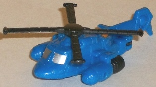
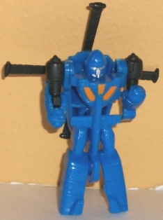
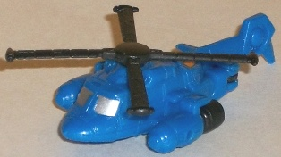
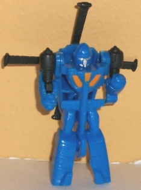

 
Allegiance : Autobot
Size : Mini-Con
Difficulty of Transformation: Very Easy
Color Scheme : Blue and some black, silver, and light orange
Individual Rating : 4.5
(NOTE: Because this is set is a repaint,
this is not a full-blown review. This mainly covers any changes made to
the molds and the color schemes, and merely compares them to Universe 2.0
Hot Shot w/ Jolt. For a review on the molds themselves, read the review
of Universe 2.0 Hot Shot w/ Jolt
here
.)
 Cop-Tur
Cop-Tur


Allegiance
: Autobot
Size
: Mini-Con
Difficulty of Transformation:
Very
Easy
Color Scheme
: Blue and some black,
silver, and light orange
Individual Rating
: 4.5
Cop-Tur here is an homage
to the 1980s Go-Bot of the same name, and shares the same general color
scheme, but with black in place of the original's silver. The light blue
makes a really nice main color for the figure, and the black really contrasts
well with it, as do the light orange paint apps on the chest. The silver
on the cockpit and robot face is also really crisply painted and well-done.
I wish he had a few more paint apps on the tail and arms-- his robot mode
is kinda sparse-- but eh, he's the Mini-Con, and he's not a very good mold
on top of that. I'd rather they put more paint apps on Dion (which they
did).
 Dion
Dion
Allegiance
: Autobot
Size
: Deluxe
Difficulty of Transformation
: Medium
Color Scheme
: Light orange, blue,k
white, and some silver, light transparent blue, dull orangish yellow, metallic
blue, tinted clear plastic, and black
Individual Rating
: 8.7
Dion is a bit of an homage
to Orion Pax's (future Optimus Prime's) friend in the G1 cartoon episode
"War Dawn", though the general color scheme and general alt mode are really
the only things that connect him to Dion-- he could easily pass as a new
character. Or really, orange-and-blue Hot Shot, given the lack of a head
remold. His color scheme is sort of the inverse of Cop-Tur's, with light
orange being the main color and blue being slightly less prevalent. They
still look pretty nice together, though in vehicle mode he admittedly looks
a tad on the dull side. The blue lines on the front are nice, but the Autobot
symbols on the side are "interrupted" by the front hinges on the side doors--
which was just bad planning, if you ask me. It looks off. In robot mode,
though-- MAN, Dion really rocks. The white does wonders for the color scheme,
making it extremely appealing to the eye, and the bits of silver and yellow
also work well where they're used. He's got paint apps EVERYWHERE< too.
Pretty much the only parts that aren't painted are the parts that CAN'T
be painted because of the type of plastic they are. THe chest, the hips,
the knees, the arms, the waist-- it's all painted, but it's not busy, as
they're pretty much all one of the three main colors. The metallic blue
used on the lower legs is also a REALLY nice shade, to the point where
I wish it was used a little more on the rest of Dion.
Although he doesn't
have a new head remold-- which is kinda of a bummer, really, as Hot Shot's
headsculpt is so unique it's hard to look at Dion as anything other than
some new-colored Hot Shot-- Dion DOES come with two spring-loaded missile
launchers that previously only came with the Henkei (Japanese) release
of Hot Shot! He can hold them both in his hands quite easily in robot mode,
and in vehicle mode the plug into the rear to look like engine exhaust.
Pretty standard missile launchers-- can he can't hold them while also having
the lower arm armor on, as can be seen in the above linked Hot Shot review--
but they're certainly nice additions to the toy. Unfortunately, the pegs
that hold the upper legs to the lower are considerably more loose this
time on my copy of Dion, though I'm not sure if this is a widespread mold
degradation issue or just a quirk that mine has.
TF Collectors' Club Dion is a freebie for 2010 members, so he's a definite no-brainer if you're already a member. But even if you're not, I think the great color scheme with a TON of paint apps on a pretty good mold and "brand new" missile launchers makes him a pretty good toy that I think is worth it if you're already in the market for this kinda stuff. Certainly the best "freebie" Club exclusive to come out so far, that's for sure.
Review by Beastbot